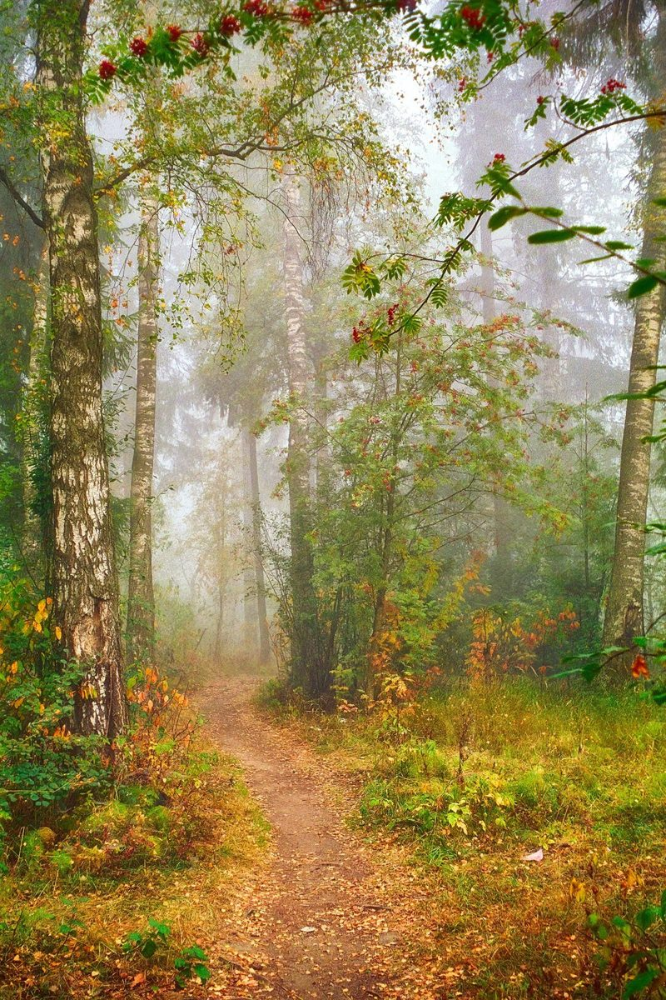
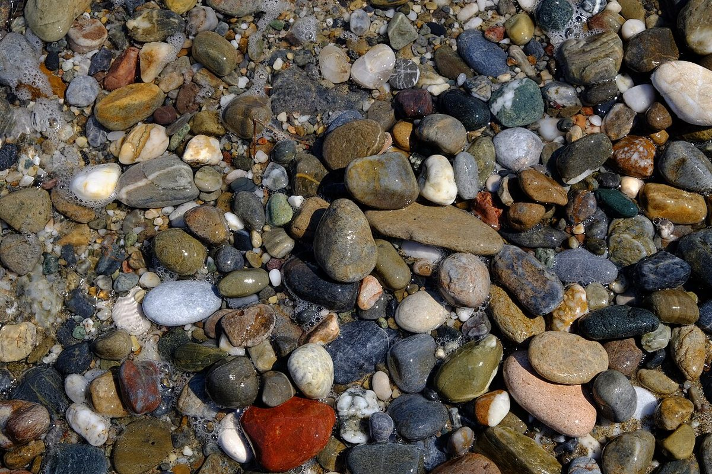

カフェ / 広島県尾道市
cafeNorn
広島県尾道市のカフェ「cafe Norn」のご案内ページです。営業時間やメニューなど、詳しいことは準備中。まずはInstagramをのぞいてみてください。

制作側の連想
NORNの四文字を、四つの石に
店名の由来は分かりません。制作側は「Norn」の四文字から、石に刻んだ文字を連想しました。そこでこのページは、N・O・R・Nの四つの文字をルーン文字風の飾り(ᚾ ᛟ ᚱ ᚾ)にして、確認できた事柄を四つの石に一つずつ刻む作りにしています。飾りは雰囲気のための記号で、意味や読みを示すものではありません。お店の理念・由来とは無関係の、制作側の連想です。
四つの石
確認できたこと、まだのこと。

国外のイメージ(英国) 所在地
広島県尾道市土堂１丁目１４−４(〒722-0035)。

国外のイメージ(ギリシャ) Instagram
@cafe.norn_onomichi で情報をご確認ください。

撮影地不明のイメージ 営業時間・定休日
準備中です。確認でき次第お知らせします。

撮影地不明のイメージ メニュー・価格
準備中です。提供内容は断定せず、確認でき次第掲載します。
霧のなかの一枚
写真はイメージです
下の写真は国外・撮影地不明のフリー素材で、お店や尾道市の景色ではありません。

ご案内
お店のこと(確認できたものだけ)
| 所在地 | 〒722-0035 広島県尾道市土堂１丁目１４−４ |
|---|---|
| 電話 | なし |
| 営業時間 | 準備中 |
| 定休日 | 準備中 |
| ご予約 | 準備中 |
| 駐車場 | 準備中 |
| SNS | Instagram @cafe.norn_onomichi |